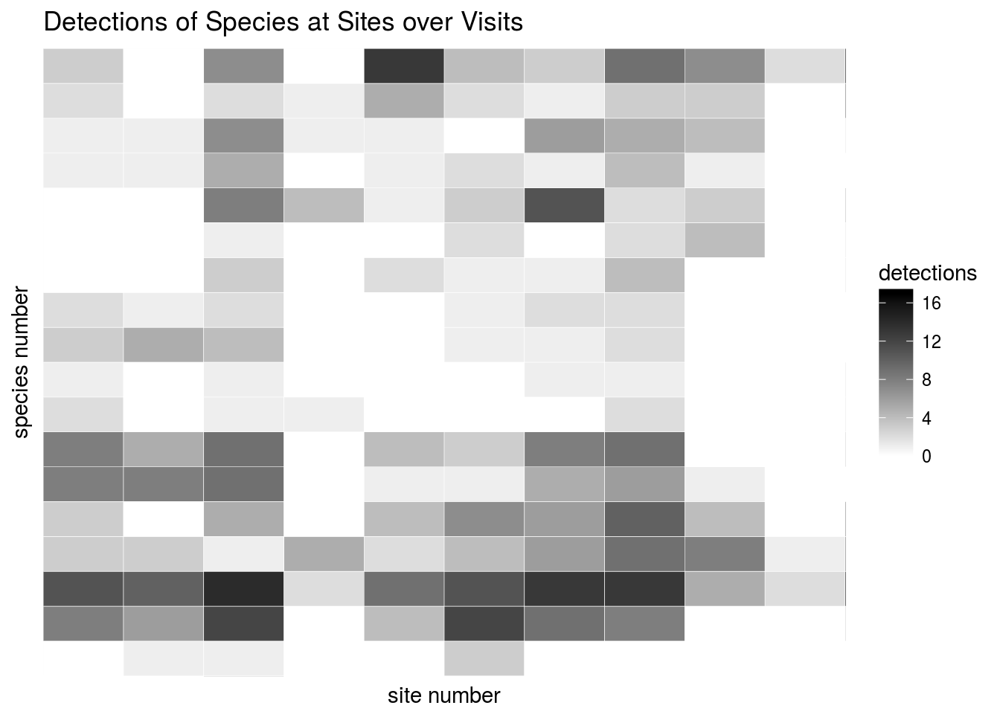
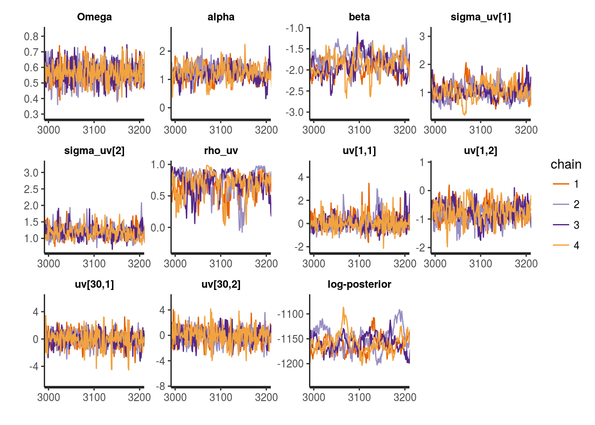
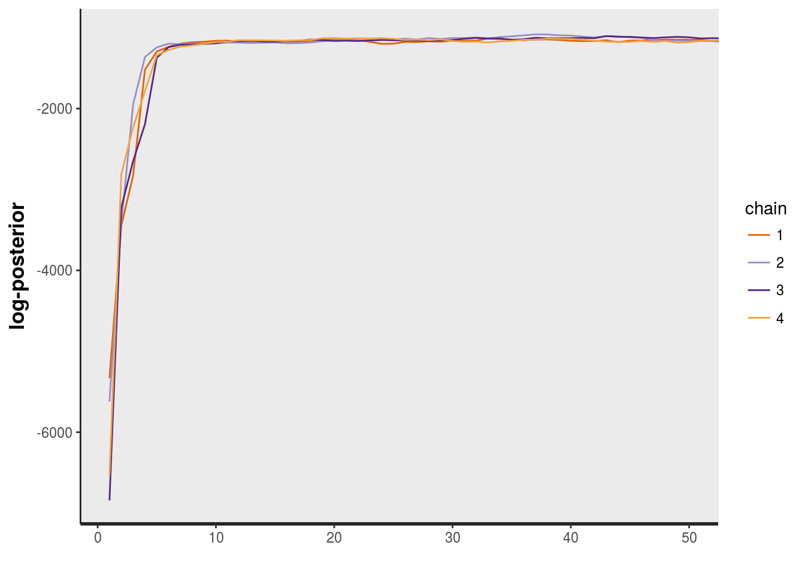
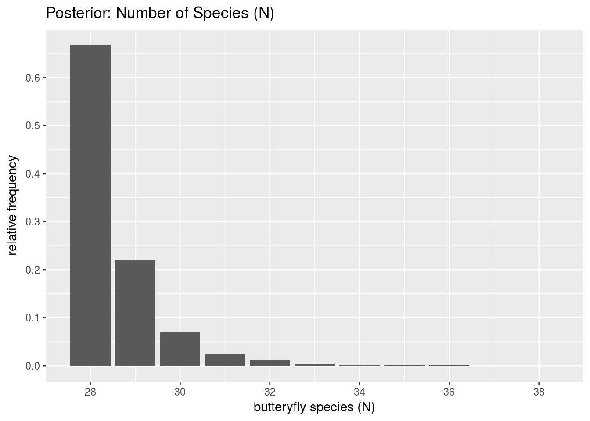
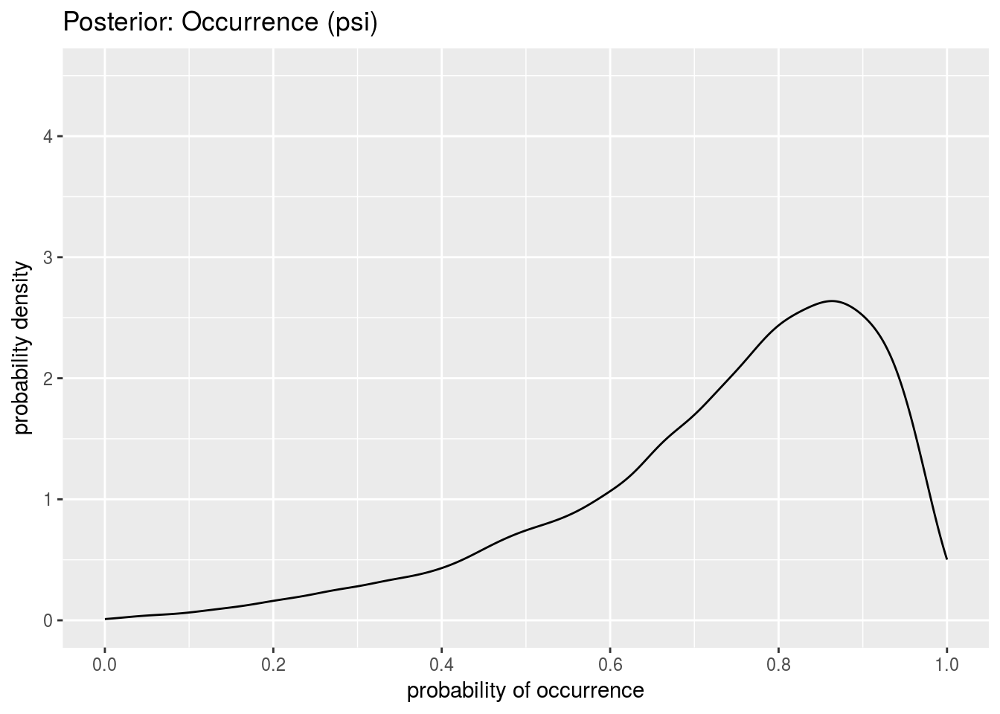
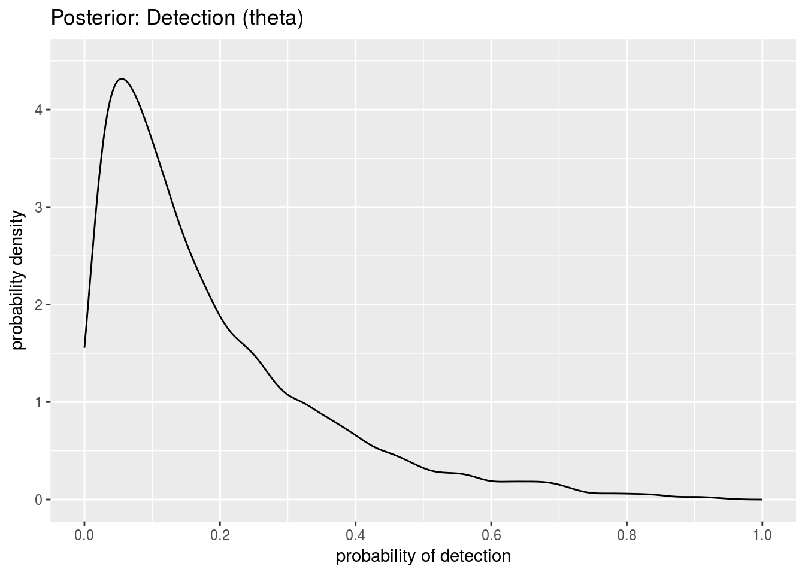
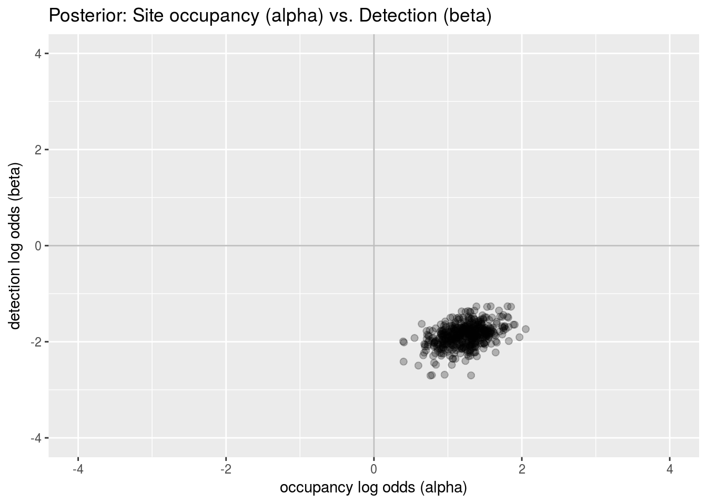
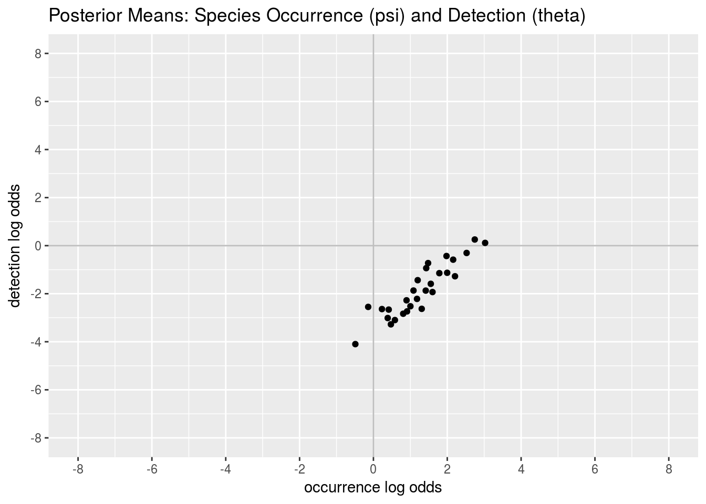
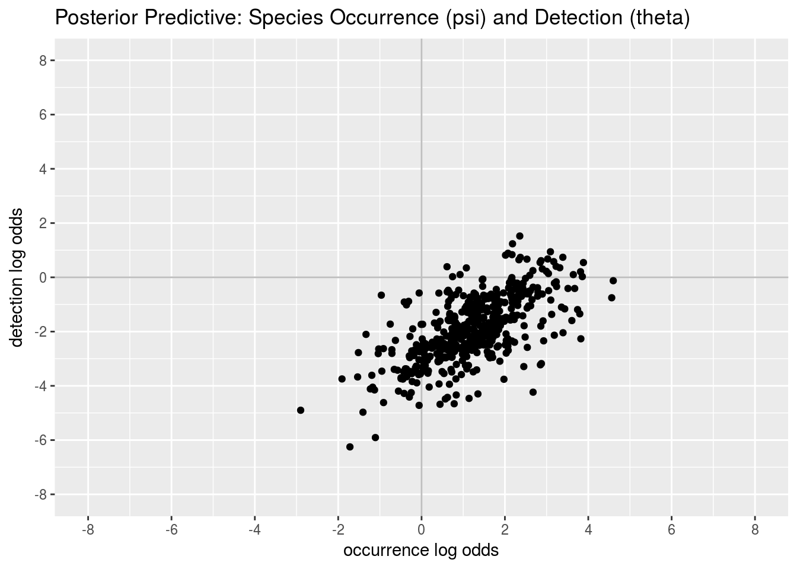

In the following paper, Dorazio et al. provide a hierarchical occupancy model for “estimating species richness and accumulation by forming these community-level attributes as functions of model-based estimators of species occurence while accounting for imperfect detection of individual species.”
Dorazio, R. M., Royle, J. A., Söderström, B., & Glimskär, A. (2006). Estimating species richness and accumulation by modeling species occurrence and detectability. Ecology 87(4), 842-854.
They apply their model to estimating total numbers of butterfly species (and of birds, with a similar format to the data).
This knitr document contains all that you need to replicate Dorazio et al.’s statistical analysis of butterfly species. The model is coded and statistical inference carried out using the Bayesian inference package RStan. A great follow-on exercise would be to code up more of the models from Dorazio and Royle’s book in Stan.
The data consists of an the observation of butterfly species in July 1997 at “grazed seminatural grasslands located in south-central Sweden…Twenty grasslands thought to be representative of the region were selected for sampling”.
The data consists of the following variables:
\(n\): distinct butterfly species detected (28)
\(J\): distinct sites visited (20)
\(K\): visits to each site (18)
\(x\): \(n \times J\) matrix where \(x_{i,j} \in 1{:}K\) is the number of visits in which species \(i\) was observed at site \(j\)
\(S\): size of supercommunity out of which community is drawn (50)
The supercommunity size parameter \(S\) is just required to be large enough to encompass all possible species that might be present; it will affect the estimation of various model parameters, but not the derived quantities of interest such as the estimated total number of species available at a site.
Reading the data in requires a web connection to the publisher’s web site:
x_csv <- read.csv("http://esapubs.org/archive/ecol/E087/050/butterflyData.txt");
n <- dim(x_csv)[1];
J <- dim(x_csv)[2];
x <- matrix(NA, n, J)
for (i in 1:n) {
for (j in 1:J) {
x[i,j] <- x_csv[i,j];
}
}
K <- 18; # read from paper, figure 5
S <- 50; # more than adequate judging from plot in figure 6
head(x_csv);## X1 X2 X3 X4 X5 X6 X7 X8 X9 X10 X11 X12 X13 X14 X15
## Aglais.urticae 0 0 1 0 1 2 1 0 1 1 2 0 3 2 1
## Aphantopus.hyperantus 14 10 13 15 3 9 7 17 1 11 11 15 15 6 0
## Argynnis.paphia 0 0 2 4 1 1 0 5 0 0 0 2 2 0 0
## Aricia.artaxerxes 0 1 0 4 0 0 0 0 0 2 2 0 0 0 0
## Aricia.eumedon 0 3 1 4 0 0 0 2 0 0 0 0 0 0 0
## Brenthis.ino 0 1 1 1 0 0 1 1 0 0 3 0 0 0 0
## X16 X17 X18 X19 X20
## Aglais.urticae 1 1 0 2 0
## Aphantopus.hyperantus 10 15 5 11 6
## Argynnis.paphia 0 1 3 1 1
## Aricia.artaxerxes 2 1 0 0 0
## Aricia.eumedon 0 0 0 0 0
## Brenthis.ino 0 0 1 0 0The first thing Dorazio et al. do is plot the data itself (figure 5 of their paper). This requires the R packages ggplot2 and reshape2, (both of which may be installed from CRAN).
library(ggplot2);
library(reshape2);
df_x <- melt(x);
colnames(df_x)[1] <- "species";
colnames(df_x)[2] <- "site";
colnames(df_x)[3] <- "detections";
head(df_x);## species site detections
## 1 1 1 0
## 2 2 1 14
## 3 3 1 0
## 4 4 1 0
## 5 5 1 0
## 6 6 1 0detections_heatmap_plot <-
ggplot(df_x, aes(site, species)) +
geom_tile(aes(fill = detections), colour = "white") +
scale_fill_gradient(low = "white", high = "black") +
labs(x = "site number", y = "species number") +
scale_x_discrete(expand = c(0, -5), breaks=(5 * (1:4))) +
scale_y_discrete(expand = c(0, -5), breaks=(5 * (1:5))) +
ggtitle("Detections of Species at Sites over Visits");
plot(detections_heatmap_plot);
Unlike Dorazio et al.’s original plot, this version does not reorder the species by total detections.
The model involves parameters for the site (here the sites are considered exchangeable and considered to share a single parameter) that determine species occupancy and detectability.
\(\alpha\) : site-level occupancy (logit scaled)
\(\beta\) : site-level detection (logit scaled)
There is a single parameter for the probability of a species being in the region:
Then for each species \(i\), there are a pair of parameters for species-specific occupancy and detection
\(u_i\) : species-level occupancy (logit scaled)
\(v_i\) : species-level detection (logit scaled)
These species-level effects are given a hierarchical multivariate normal prior with zero mean and covariance matrix parameterized by three scalars,
so that the covariance matrix for the prior on \((u,v)\) pairs is defined as
\(\Sigma = \left[ \begin{array}{cc} \sigma_u^2 & \sigma_u \sigma_v \rho_{uv} \\ \sigma_u \sigma_v \rho_{uv} & \sigma_v^2 \end{array} \right]\)
Rather than using Dorazio et al.’s exact diffuse priors, we follow the recommendations given in the Stan manual, and formulate priors as
\(\alpha, \beta \sim \mbox{Cauchy}(0, 2.5)\)
\(\sigma_u, \sigma_v \sim \mbox{Cauchy}(0, 2.5)\)
\((\rho_{uv} + 1) / 2 \sim \mbox{Beta}(2,2)\)
\((u_i, v_i) \sim \mbox{Normal}(0, \Sigma)\)
\(\Omega \sim \mbox{Beta}(2,2)\)
Although we did not perform any prior sensitivity analysis, the results from the above weakly informative priors are in-line with what Dorazio et al. found with diffuse conjugate inverse gamma priors on \(\sigma_u, \sigma_v\), diffuse normal priors on \(\alpha, \beta\), and uniform priors on \(\Omega\) and \(\rho_{uv}\).
Dorazio et al. formulate the likelihood for \(x_{i,j}\) in terms of two discrete variables,
\(z_{i,j} = 1\) if species \(i\) is present at site \(j\)
\(w_i = 1\) if species \(i\) in supercommunity is available
By definition, for \(i \in (n+1){:}S\), \(x_{i,j} = 0\), because no members of species \(i\) was detected for \(i > n\). Also by definition, \(w_i = 1\) for \(i \leq n\), because a species must be available if it was detected, whereas \(w_i\) for \(i > n\) is a latent parameter. The availability of a species from the supercommunity is modeled by
The site-level availability is modeled by
where \(\psi_i = \mbox{logit}^{-1}(u_i + \alpha)\). Dorazio et al. use two indexes, writing \(\psi_{i,j}\), but for their analyses assume \(\psi_{i,j} = \psi_{i,j'}\) for all \(j, j'\), allowing this note to simplify \(\psi\) to a vector.
The likelihood for the observed data is defined by marginalizing over the unobserved latent parameters (by “summing out” using the law of total probability), with the number of visits to site \(j\) on which species \(i\) was detected is given by equation (2) in Dorazio et al.’s paper, which we rewrite using sampling notation as
where the detection probability is \(\theta_i = \mbox{logit}^{-1}(v_i + \beta)\). (As with \(\psi\), this note simplifies Dorazio et al.’s notation by treating \(\theta\) as a vector.)
Note that if \(z_{i,j} = 0\), then species \(i\) is not present at site \(j\) and hence \(x_{i,j} = 0\) by definition. As pointed out in the paper, “if species \(i\) is not detected at site \(j\) (i.e., \(x_{i,j} = 0\)), species \(i\) is either absent (with probability \(1 - \psi_i\)) or present but undetected (with probability \(\psi_i (1 - \theta_i)^K\)).”
Marginalizing the \(z_{i,j}\) from the above gives the following for \(i \in 1{:}n\), which is explicitly conditioned on the species being available \(w_i = 1\),
\(p(x_{i,j} \, | \, \theta_i, \psi_i) = \mbox{Bernoulli}(1 \, | \, \psi_i) \times \mbox{Binomial}(x_{i,j} \, | \, K, \theta_i) + \mbox{Bernoulli}(0 \, | \, \psi_i) \times \mbox{I}(x_{i,j} = 0)\)
The Stan model will exploit the fact that if \(x_{i,j} > 0\), the second term representing non-occurrence drops out.
The \(w_i = 1\) enters the likelihood computation as \(\mbox{Bernoulli}(1 \, | \, \Omega)\) when looking at the entire vector \(x_i = x_{i,1}, \ldots, x_{i,n}\) of site-detection counts for detected species \(i \in 1{:}n\), as
\(p(x_i \, | \, \theta_i, \psi_i, \Omega) = \mbox{Bernoulli}(1 \, | \, \Omega) \times \prod_{j=1}^J p(x_{i,j} \, | \, \theta_i, \psi_i)\)
Expanding out the nested probability function gives the final form of
\(p(x_i \, | \, \theta_i, \psi_i, \Omega) = \mbox{Bernoulli}(1 \, | \, \Omega) \times \prod_{j=1}^J \left( \mbox{Bernoulli}(1 \, | \, \psi_i) \times \mbox{Binomial}(x_{i,j} \, | \, K, \theta_i) + \mbox{Bernoulli}(0 \, | \, \psi_i) \times \mbox{I}(x_{i,j} = 0) \right)\)
The \(1\) built into the Bernoulli is because we know that \(x_{i,j} > 0\) for at least one \(j\) and hence we know species \(i\) is available.
The last step is marginalizing out the \(w_i\) for the undetected species \(i \in (n+1){:}S\), for which we know \(x_{i,j} = 0\), giving
\(p(x_i \, | \, \Omega, \psi_i, \theta_i) = \mbox{Bernoulli}(0 \, | \, \Omega) + \mbox{Bernoulli}(1 \, | \, \Omega) \times \prod_{j=1}^J p(x_{i,j} \, | \, \theta_i, \psi_i)\).
where the final term is defined as for the formula conditioning on \(w_i = 1\) above, knowing that \(x_{i,j} = 0\) because \(i > n\), resulting in the full joint likelihood of \(x_i = x_{i,1}, \ldots, x_{i,J}\) for the case where \(i > n\) of
\(p(x_i \, | \, \Omega, \psi_i, \theta_i) = \begin{array}[t]{l} \mbox{Bernoulli}(0 \, | \, \Omega) \\ \mbox{ } + \mbox{Bernoulli}(1 \, | \, \Omega) \times \prod_{j=1}^J \big( \mbox{Bernoulli}(1 \, | \, \psi_i) \times \mbox{Binomial}(x_{i,j} \, | \, K, \theta_i) + \mbox{Bernoulli}(0 \, | \, \psi_i) \big) \end{array}\)
With the data, parameters, likelihood, and prior in hand, the Stan program defines the log density following the steps given above for marginalizing out the discrete parameters.
stan_program <- "
functions {
matrix cov_matrix_2d(vector sigma, real rho) {
matrix[2,2] Sigma;
Sigma[1,1] = square(sigma[1]);
Sigma[2,2] = square(sigma[2]);
Sigma[1,2] = sigma[1] * sigma[2] * rho;
Sigma[2,1] = Sigma[1,2];
return Sigma;
}
real lp_observed(int x, int K, real logit_psi, real logit_theta) {
return log_inv_logit(logit_psi)
+ binomial_logit_lpmf(x | K, logit_theta);
}
real lp_unobserved(int K, real logit_psi, real logit_theta) {
return log_sum_exp(lp_observed(0, K, logit_psi, logit_theta),
log1m_inv_logit(logit_psi));
}
real lp_never_observed(int J, int K, real logit_psi, real logit_theta,
real Omega) {
real lp_unavailable = bernoulli_lpmf(0 | Omega);
real lp_available = bernoulli_lpmf(1 | Omega)
+ J * lp_unobserved(K, logit_psi, logit_theta);
return log_sum_exp(lp_unavailable, lp_available);
}
}
data {
int<lower=1> J; // sites within region
int<lower=1> K; // visits to sites
int<lower=1> n; // observed species
int<lower=0, upper=K> x[n,J]; // visits when species i was detected at site j
int<lower=n> S; // superpopulation size
}
parameters {
real alpha; // site-level occupancy
real beta; // site-level detection
real<lower=0, upper=1> Omega; // availability of species
real<lower=-1,upper=1> rho_uv; // correlation of (occupancy, detection)
vector<lower=0>[2] sigma_uv; // sd of (occupancy, detection)
vector[2] uv[S]; // species-level (occupancy, detection)
}
transformed parameters {
vector[S] logit_psi; // log odds of occurrence
vector[S] logit_theta; // log odds of detection
for (i in 1:S)
logit_psi[i] = uv[i,1] + alpha;
for (i in 1:S)
logit_theta[i] = uv[i,2] + beta;
}
model {
// priors
alpha ~ cauchy(0, 2.5);
beta ~ cauchy(0, 2.5);
sigma_uv ~ cauchy(0, 2.5);
(rho_uv + 1) / 2 ~ beta(2, 2);
uv ~ multi_normal(rep_vector(0, 2), cov_matrix_2d(sigma_uv, rho_uv));
Omega ~ beta(2,2);
// likelihood
for (i in 1:n) {
1 ~ bernoulli(Omega); // observed, so available
for (j in 1:J) {
if (x[i,j] > 0)
target += lp_observed(x[i,j], K, logit_psi[i], logit_theta[i]);
else
target += lp_unobserved(K, logit_psi[i], logit_theta[i]);
}
}
for (i in (n + 1):S)
target += lp_never_observed(J, K, logit_psi[i], logit_theta[i], Omega);
}
generated quantities {
real<lower=0,upper=S> E_N = S * Omega; // model-based expectation species
int<lower=0,upper=S> E_N_2; // posterior simulated species
vector[2] sim_uv;
real logit_psi_sim;
real logit_theta_sim;
E_N_2 = n;
for (i in (n+1):S) {
real lp_unavailable = bernoulli_lpmf(0 | Omega);
real lp_available = bernoulli_lpmf(1 | Omega)
+ J * lp_unobserved(K, logit_psi[i], logit_theta[i]);
real Pr_available = exp(lp_available
- log_sum_exp(lp_unavailable, lp_available));
E_N_2 = E_N_2 + bernoulli_rng(Pr_available);
}
sim_uv = multi_normal_rng(rep_vector(0,2),
cov_matrix_2d(sigma_uv, rho_uv));
logit_psi_sim = alpha + sim_uv[1];
logit_theta_sim = beta + sim_uv[2];
}
";There are several helper functions defined:
cov_matrix_2d(): constructs a \(2 \times 2\) covariance matrix from the standard deviations and correlation
lp_observed(): log likelihood function for case where \(x_{i,j} > 0\) (entails \(i \leq n\))
lp_unobserved(): log likelihood function for case where \(x_{i,j} = 0\)
lp_never_observed(): log likelihood function for case where the entire vector \(x_i = 0\) (entails \(i > n\))
These log likelihood definitions take advantage of the fact that \(\psi\) and \(\theta\) do not vary by site, allowing scalar arguments to the functions and the use of \(J\) as a multiplicand in the definition of lp_never_observed().
The data and parameters are declared with appropriate constraints based on their restrictions.
The transformed parameters block defines the logit-scaled versions of \(\psi\) and \(\theta\) as vectors, again noting they do not vary by site in this model.
The model block defines the priors directly as specified. The expression rep_vector(0, 2) provides a zero-vector for the mean of the multivariate normal prior.
The model block then defines the likelihood by separating out the cases for \(i \leq n\) and the cases \(i > n\). The former also branches using a conditional on x[i,j] > 0 to determine whether to use the simplified form of log likelihood for the unobserved case. Otherwise, the likelihood is just called directly. The increment_log_prob() function is used to add directly to the log density defined by the Stan model block.
The generated quantities block performs three calculations. The generated quantities block is executed once per iteration, calculating the variables declared at the top of the block using the parameter values for the iteration. This provides full Bayesian inference via MCMC for the following variables defined in the generated quantities block.
E_N, the expectation of \(N\) using the simple formula \(S \times \Omega\) suggested in the Dorazio et al. paper.
E_N_2, which we assume is how Dorazio et al. actually estimated species occupancy. This is carried out by reconstructing the expectations of the \(w_i\) in the posterior for \(i > n\) and adding the resulting sum to \(n\), because we know \(w_i = 1\) for \(i \leq n\). The log likelihood of availability and unavailability is calculated for each \(i > n\), then normalized to define Pr_available, which is the posterior expectation of \(w_i\) for species never detected for the parameter values being used.
The third generated quantities is a set of simulated \((u,v)\) pairs for a new species, along with the logit-scaled \(\psi\) and \(\theta\) variables. These are used for posterior predictive checking to see if the actual species are distributed as characterized by their prior.
Next up, we fit the model by running Stan and then printing the fit object producted. The control parameters are provided to avoid divergence of the numerical simulations during warmup. The initial stepsize is set to 0.01 instead of its default 1, which causes the Hamiltonian dynamics to be evaluated using smaller steps at the expense of some computaiton time. The other control parameter is the target acceptance rate (a complicated notion with the no-U-turn sampler used by Stan), which is set to 0.95, which is higher than its default value of 0.8, so that the target step size will be lower and the floating-point arithmetic more stable. Together, these cause Stan to run a bit more stably but at about half the speed of the default settings.
A total of four Markov chains are simulated, each for 5000 iterations, with the default of 2500 warmup iterations being used for adaptation and discarded to produce the final sample, which will consist of the second-half of each chain, or a total of 10,000 draws. The width of the print is increased before printing the fit because it’s rather wide.
The model is fit by loading the RStan library, then calling the stan() function given the program, names of the data variables in the global environment, a control specification for Stan (optional), and a number of chains, iterations per chain, and random seed (the seed is also optional but will guarantee the same results across runs if provided).
library(rstan);
fit <- stan(model_code=stan_program, data=c("x", "n", "J", "K", "S"),
control=list(stepsize=0.01, adapt_delta=0.95),
chains=4, iter=5000, refresh=0, seed=12345);## Warning: There were 4 chains where the estimated Bayesian Fraction of Missing Information was low. See
## http://mc-stan.org/misc/warnings.html#bfmi-low## Warning: Examine the pairs() plot to diagnose sampling problemsSetting refresh=0 removes the output updates during warmup and sampling.
The fit object can be directly printed in RStan (after widening the default output number of columns).
options(width="120")
print(fit, c("alpha", "beta", "Omega", "sigma_uv", "rho_uv", "E_N", "E_N_2", "lp__"));## Inference for Stan model: ff975a7e121ef7b489369ef2eb311654.
## 4 chains, each with iter=5000; warmup=2500; thin=1;
## post-warmup draws per chain=2500, total post-warmup draws=10000.
##
## mean se_mean sd 2.5% 25% 50% 75% 97.5% n_eff Rhat
## alpha 1.23 0.01 0.28 0.67 1.05 1.23 1.41 1.79 1976 1.00
## beta -1.88 0.01 0.24 -2.38 -2.03 -1.87 -1.72 -1.44 1053 1.00
## Omega 0.56 0.00 0.07 0.43 0.52 0.56 0.61 0.70 10000 1.00
## sigma_uv[1] 1.05 0.01 0.30 0.53 0.85 1.02 1.22 1.70 963 1.01
## sigma_uv[2] 1.19 0.00 0.21 0.86 1.05 1.17 1.31 1.68 1842 1.00
## rho_uv 0.70 0.01 0.19 0.23 0.60 0.74 0.84 0.95 639 1.01
## E_N 28.23 0.03 3.39 21.56 25.94 28.25 30.56 34.82 10000 1.00
## E_N_2 28.52 0.02 0.93 28.00 28.00 28.00 29.00 31.00 2072 1.00
## lp__ -1158.52 0.97 19.69 -1194.86 -1171.76 -1159.49 -1146.22 -1117.67 413 1.01
##
## Samples were drawn using NUTS(diag_e) at Tue Jun 27 21:01:41 2017.
## For each parameter, n_eff is a crude measure of effective sample size,
## and Rhat is the potential scale reduction factor on split chains (at
## convergence, Rhat=1).An explicit list of parameters to print is provided to suppress the printing of the parameters u and v and the transformed parameters logit_psi and logit_theta.
The traceplots can be shown for some of the parameters (incuding one \((u,v)\) pair for a detected species and one for an undetected species) and the log density (up to a constant).
traceplot(fit,
c("Omega", "alpha", "beta", "sigma_uv", "rho_uv",
"uv[1,1]", "uv[1,2]", "uv[30,1]", "uv[30,2]",
"lp__"),
inc_warmup=FALSE) +
coord_cartesian(xlim = c(3001,3200)) +
scale_x_continuous(breaks=c(3000, 3100, 3200))
This only shows 200 iterations so the speed of the mixing can be visualized. It shows that the parameters mix quite well after warmup, which is what leads to high numbes of effective samples (n_eff) relative to the number of iterations and mixing diagnostic (Rhat) being close to 1. To get a sense of the speed of convergence, the following shows the traceplot for the first 50 warmup iterations for the total model log density, showing Stan converging rapdily from four different initial starting points of widely varying density. As seen in this example, Stan is quite effective at converging from diffuse random initializations of the parameters.
traceplot(fit, "lp__", inc_warmup=TRUE) +
coord_cartesian(xlim = c(1, 50));
This time, the warmup was included in the traceplot and only the first 50 iterations shown.
Stan also provides a built-in pairs plot, which by default puts half the chains above the diagonal and half below, and can also be specialized to a subset of the parameters.
# pairs(fit, pars = c("Omega", "alpha", "beta", "sigma_uv", "rho_uv", "lp__"));This plot is not turned on in the output because it produces a huge image with this many draws (there is a condition argument to pairs() that can be used to trim the input or reorganize what is printed above and below the diagonal based on user-defined conditions.
One of the key estimands of interest in the Dorazio et al. paper is the total number of species available. How this is computed was already discussed above in the model section. To recreate figure 6 from the Dorazio et al. paper, which plots the posterior estimates for total species, the following ggplot2 code suffices. Before the plot is run, the simulations are extracted from the fit object and used to build up the frequency to be plotted.
sims <- extract(fit);
freq <- rep(0,S);
N <- sims$E_N_2
for (i in 1:length(N))
freq[N[i]] <- freq[N[i]] + 1;
freq <- freq / length(N);
dat <- data.frame(freq);
dat <- cbind(1:S, dat);
colnames(dat)[1] <- "N";
dat <- dat[28:38, ];
N_bar_plot <-
ggplot(data=dat, aes(x=N, y=freq)) +
geom_bar(stat="identity") +
scale_x_continuous(name="butteryfly species (N)",
breaks=c(28,30,32,34,36,38)) +
scale_y_continuous(name="relative frequency",
breaks=(0.1 * (0:6))) +
ggtitle("Posterior: Number of Species (N)");
plot(N_bar_plot);
The plot confirms that the choice of \(S = 50\) is adequate; had the posterior mass extended up to 50, we would need to rerun the analysis with a higher value.
The following plots the posterior density of \(\psi\) (probability of occurrence) on the original probability scale, which is the left-side plot in figure 7 in the Dorazio et al. paper; the inverse logit function is defined to do the transform from the logit-scaled parameters.
ilogit <- function(u) { return(1 / (1 + exp(-u))); }
df_psi_theta <- data.frame(cbind(ilogit(sims$logit_psi_sim),
ilogit(sims$logit_theta_sim)));
colnames(df_psi_theta)[1] <- "psi";
colnames(df_psi_theta)[2] <- "theta";
psi_density_plot <-
ggplot(df_psi_theta, aes(x=psi)) +
geom_line(stat = "density", adjust=1) +
scale_x_continuous(name="probability of occurrence",
limits=c(0,1), breaks=(0.2 * (0:5))) +
scale_y_continuous(name="probability density",
limits=c(0,4.5), breaks=(0:4)) +
ggtitle("Posterior: Occurrence (psi)");
plot(psi_density_plot);
To reproduce the right-hand side plot in figure 7 from the paper, the posterior for \(\theta\) (probability of detection) is plotted as follows, using the same data frame as for the previous plot.
theta_density_plot <-
ggplot(df_psi_theta, aes(x=theta)) +
geom_line(stat = "density", adjust=1) +
scale_x_continuous(name="probability of detection",
limits=c(0,1), breaks=(0.2 * (0:5))) +
scale_y_continuous(name="probability density",
limits=c(0,4.5), breaks=(0:4)) +
ggtitle("Posterior: Detection (theta)");
plot(theta_density_plot);
Although it duplicates the effort of the pairs() plot given above, here is a direct plot of just the posterior of the \(\alpha\) (site-level occupancy) and \(\beta\) (site-level detection) parameters. The posterior draws are subsetted so that only 500 draws are printed. These draws are random across iterations and chains because Stan’s extract() function permutes the draws by default.
fit_ss <- extract(fit);
df_alpha_beta <- data.frame(fit_ss$alpha, fit_ss$beta);
colnames(df_alpha_beta)[1] <- "alpha";
colnames(df_alpha_beta)[2] <- "beta";
df_alpha_beta <- head(df_alpha_beta,500);
alpha_beta_scatter_plot <-
ggplot(df_alpha_beta, aes(x=alpha, y=beta)) +
geom_point(size=2, alpha=0.25) +
geom_vline(xintercept=0, colour="gray") +
geom_hline(yintercept=0, colour="gray") +
scale_x_continuous(name="occupancy log odds (alpha)", limits=c(-4,4)) +
scale_y_continuous(name="detection log odds (beta)", limits=c(-4,4)) +
ggtitle("Posterior: Site occupancy (alpha) vs. Detection (beta)");
plot(alpha_beta_scatter_plot);
Going beyond the figures in the paper, we also provide a scatterplot of the posterior means for the estimates of the \(\psi\) and \(\theta\) parameters for the observed species with \(i \leq n\), using the following code.
logit_theta_sims <- extract(fit)$logit_theta;
logit_psi_sims <- extract(fit)$logit_psi;
occurrence_hat <- c();
detection_hat <- c();
for (i in 1:n) {
occurrence_hat[i] <- mean(logit_psi_sims[,i]);
detection_hat[i] <- mean(logit_theta_sims[,i]);
}
df_psi_theta_fit <-
data.frame(occurrence_hat, detection_hat);
psi_theta_hat_scatter_plot <-
ggplot(df_psi_theta_fit, aes(x=occurrence_hat, y=detection_hat)) +
geom_vline(xintercept=0, colour="gray") +
geom_hline(yintercept=0, colour="gray") +
geom_point(size=1.5) +
scale_x_continuous(name="occurrence log odds",
limits=c(-8,8), breaks=2*(-4:4)) +
scale_y_continuous(name="detection log odds",
limits=c(-8,8), breaks=2*(-4:4)) +
ggtitle("Posterior Means: Species Occurrence (psi) and Detection (theta)");
plot(psi_theta_hat_scatter_plot);
The actual fitted posterior means for the \(\theta\) and \(\psi\) parameters can be compared to a posterior simulation of a new species given the prior on \((u,v)\) to perform an informal posterior predictive check. Only 500 random draws from the total of 10,000 drawn are shown.
df_psi_theta_sim <-
data.frame(occurrence = extract(fit)$logit_psi_sim,
detection= extract(fit)$logit_theta_sim);
df_psi_theta_sim <- head(df_psi_theta_sim, 500);
psi_theta_sim_scatter_plot <-
ggplot(df_psi_theta_sim, aes(x=occurrence, y=detection)) +
geom_vline(xintercept=0, colour="gray") +
geom_hline(yintercept=0, colour="gray") +
geom_point(size=1.5) +
scale_x_continuous(name="occurrence log odds",
limits=c(-8,8), breaks=2*(-4:4)) +
scale_y_continuous(name="detection log odds",
limits=c(-8,8), breaks=2*(-4:4)) +
ggtitle("Posterior Predictive: Species Occurrence (psi) and Detection (theta)");
plot(psi_theta_sim_scatter_plot);
Thanks to Mike Meredith for terminological and mathematical adjustments to the first version.
All code in this document is licensed via the BSD 3-clause license.